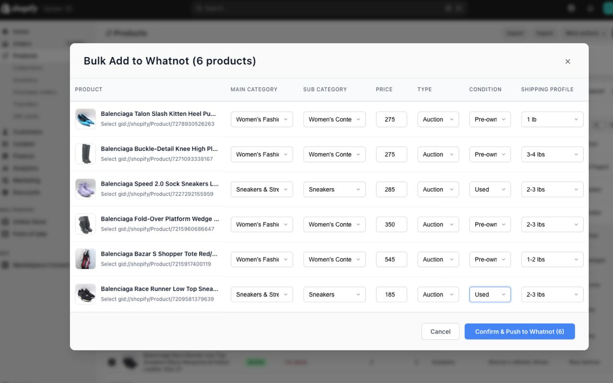

Shopify to Whatnot Export Tool - Export Products in Seconds
The #1 Shopify to Whatnot export tool. Convert your entire Shopify inventory to Whatnot-ready CSV files with just one click. No manual copy-paste, no formatting headaches—just instant Shopify to Whatnot exports.
Add to ChromeShopify to Whatnot Export Features
- Export Shopify titles, descriptions, prices, images, and more to Whatnot
- No more manual copy-paste or renaming files when moving from Shopify to Whatnot
- Works directly from your Shopify admin panel
- Save hours every week—focus on selling, not busywork
- Privacy-friendly: your Shopify data stays yours
What Shopify to Whatnot Users Are Saying
"Shop2not saved me hours! I was able to prep my Shopify to Whatnot sale in minutes."
